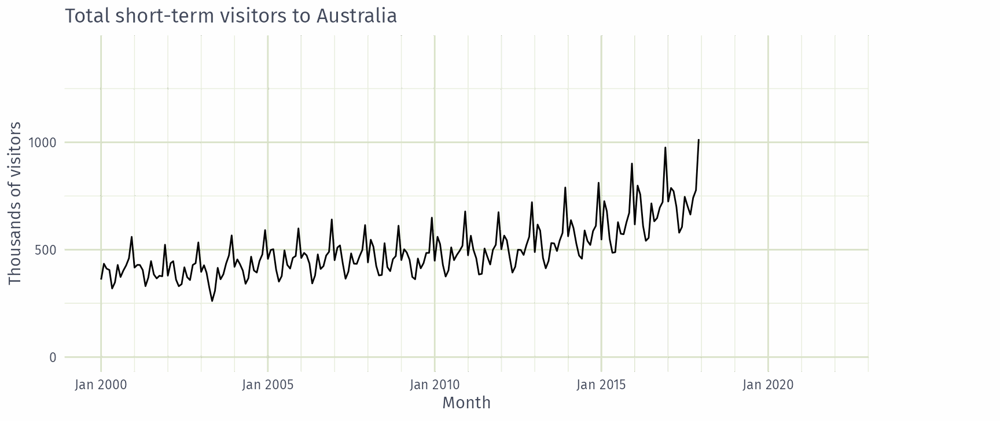
 AFRICAST
AFRICASTTidy time series & forecasting in R
Basic modelling and forecasting
Session 4 of 10


workshop.f4sg.org/africastForecasting for Social Good
Your forecasting
What do you forecast (or wish you could) in your work?
Statistical forecasting
Forecasting workflow
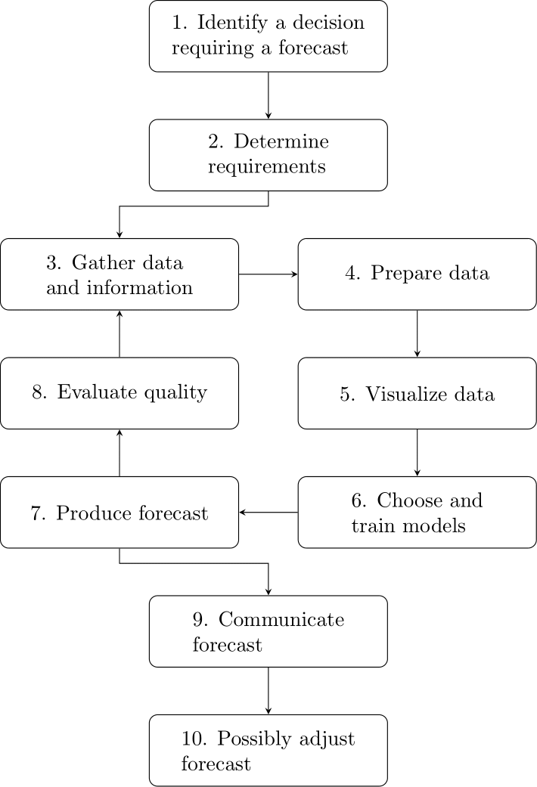
Statistical forecasting steps

What is a forecast?
A forecast is an estimate of the probability distribution of a variable to be observed in the future.
What is a forecast?
A forecast is an estimate of the probability distribution of a variable to be observed in the future.
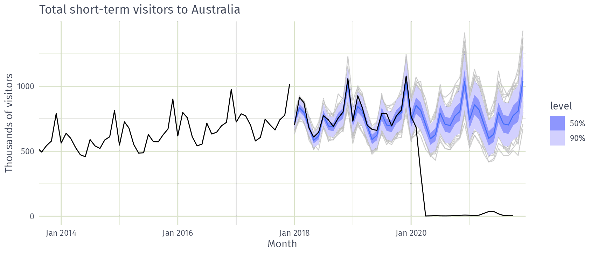
Simulated futures from an ETS model
Was this a good forecast?
- Yes
- No
What is a forecast?
A forecast is an estimate of the probability distribution of a variable to be observed in the future.
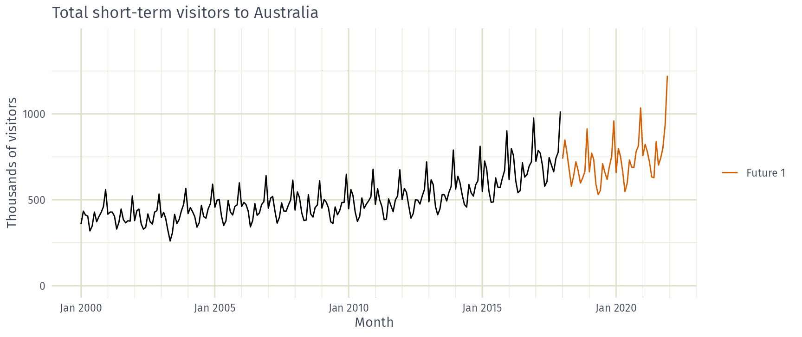
Simulated futures from an ETS model
What is a forecast?
A forecast is an estimate of the probability distribution of a variable to be observed in the future.
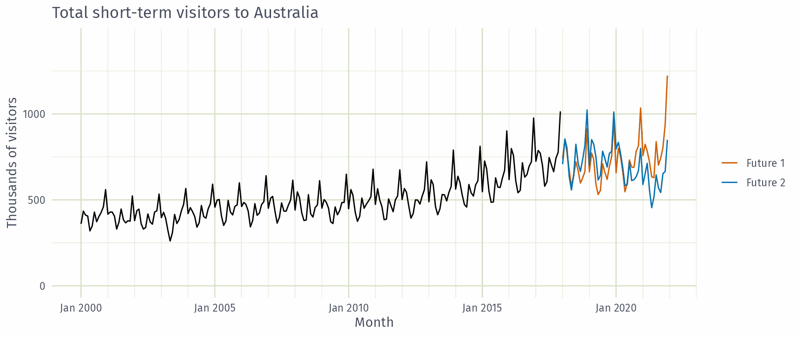
Simulated futures from an ETS model
What is a forecast?
A forecast is an estimate of the probability distribution of a variable to be observed in the future.
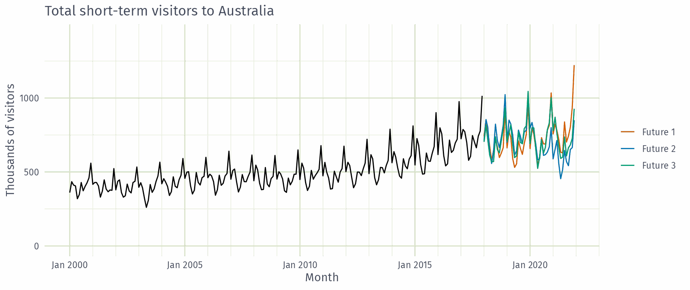
Simulated futures from an ETS model
What is a forecast?
A forecast is an estimate of the probability distribution of a variable to be observed in the future.
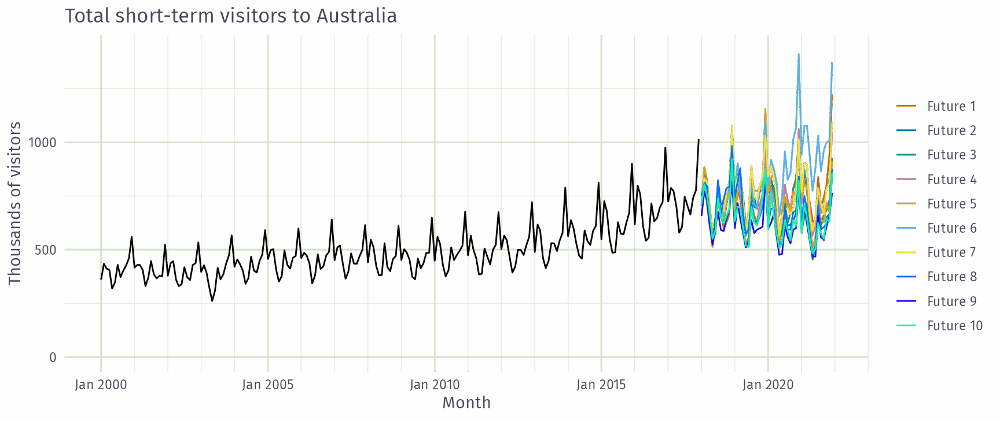
Simulated futures from an ETS model
What is a forecast?
A forecast is an estimate of the probability distribution of a variable to be observed in the future.
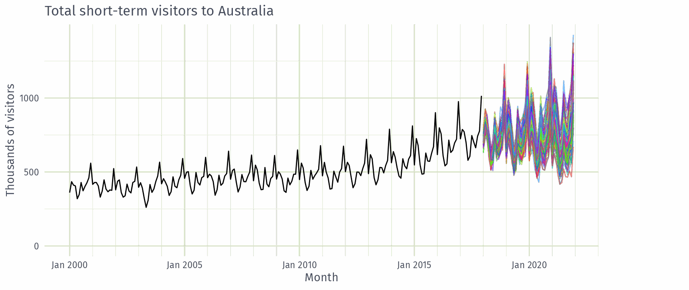
Simulated futures from an ETS model
What is a forecast?
A forecast is an estimate of the probability distribution of a variable to be observed in the future.
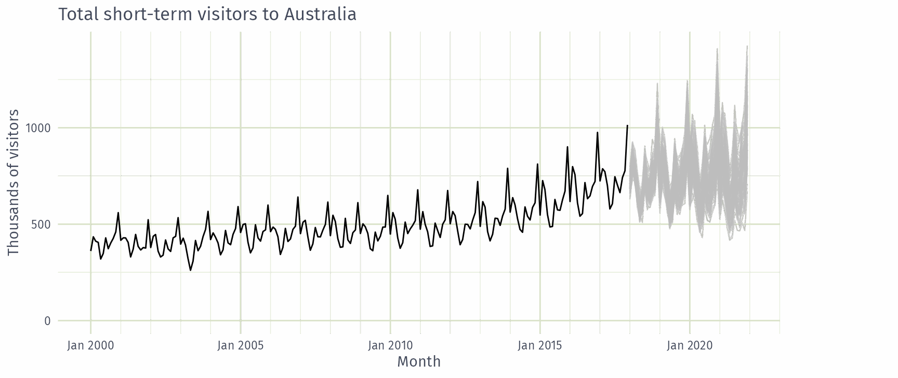
Simulated futures from an ETS model
What is a forecast?
A forecast is an estimate of the probability distribution of a variable to be observed in the future.
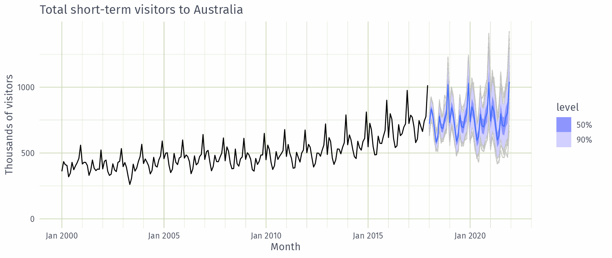
Simulated futures from an ETS model
Prediction interval
A 90% prediction interval contains the future value with 90% probability.
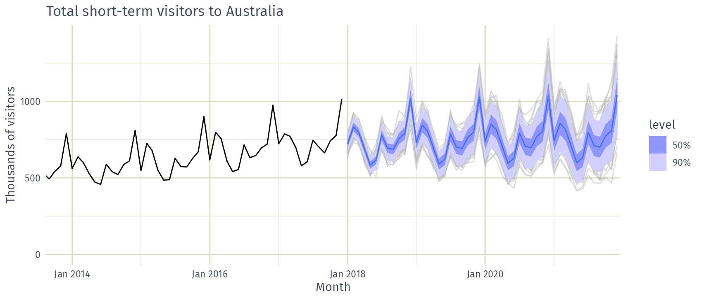
Simulated futures from an ETS model
Visualising forecast distributions
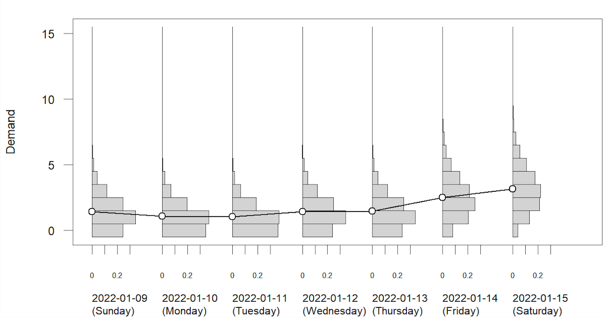
Forecast distribution
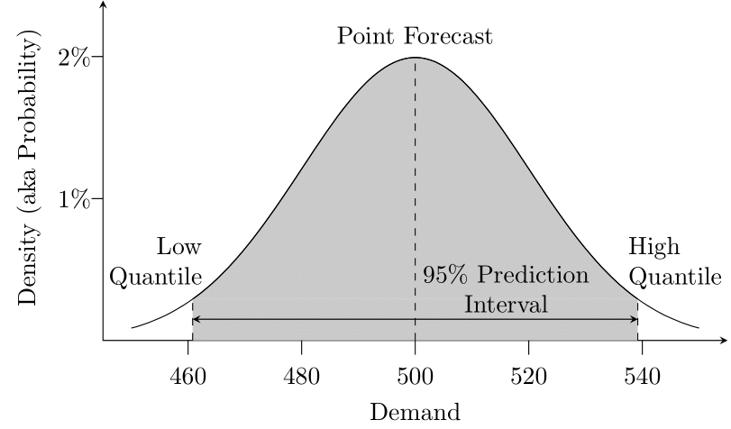
Statistical forecasting
- Thing to be forecast: \(y_{T+h}\).
- What we know: \(y_1,\dots,y_T\).
- Forecast distribution: \(y_{T+h|T} = y_{T+h} \mid \{y_1,y_2,\dots,y_{T}\}\).
- Point forecast: \(\hat{y}_{T+h|T} =\text{E}[y_{T+h} \mid y_1,\dots,y_T]\).
- Forecast variance: \(\text{Var}[y_{T+h} \mid y_1,\dots,y_T]\).
- Prediction interval is a range of values of \(y_{T+h}\) with high probability.
What can we forecast?
What can we forecast?
What can we forecast?
What can we forecast?

What can we forecast?
What can we forecast?
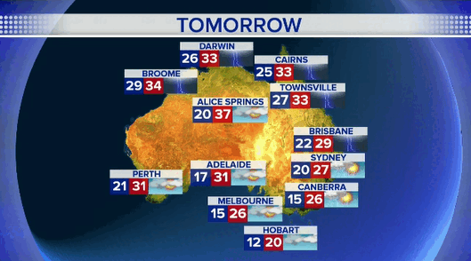
What can we forecast?
What can we forecast?
Which is easiest to forecast?
- daily electricity demand in 3 days time
- timing of next Halley’s comet appearance
- time of sunrise this day next year
- Google stock price tomorrow
- Google stock price in 6 months time
- maximum temperature tomorrow
- $AUD/USD exchange rate next week
- total sales of drugs in Australian pharmacies next month
Which is hardest to forecast?
- daily electricity demand in 3 days time
- timing of next Halley’s comet appearance
- time of sunrise this day next year
- Google stock price tomorrow
- Google stock price in 6 months time
- maximum temperature tomorrow
- $AUD/USD exchange rate next week
- total sales of drugs in Australian pharmacies next month
Factors affecting forecastability
Something is easier to forecast if:
- we have a good understanding of the factors that contribute to it;
- there is lots of data available;
- the forecasts cannot affect the thing we are trying to forecast;
- there is relatively low natural/unexplainable random variation;
- the future is somewhat similar to the past.
Benchmark methods
Some simple forecasting methods
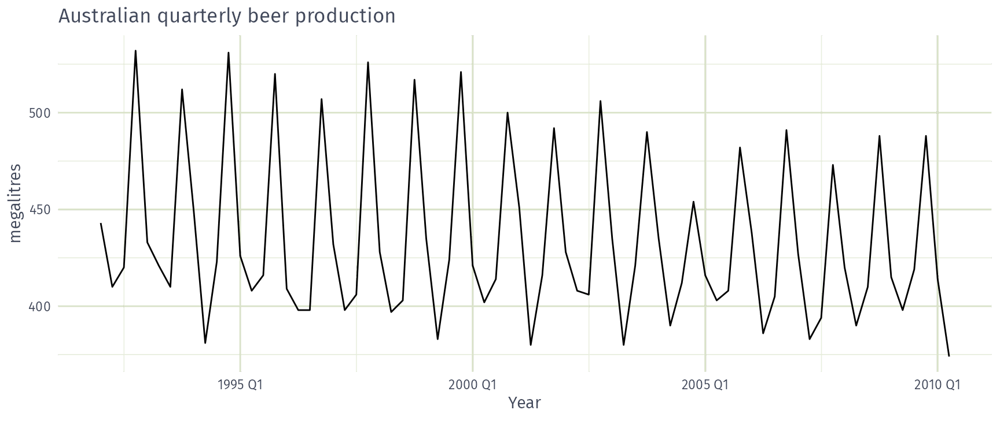
How would you forecast these series?
Some simple forecasting methods
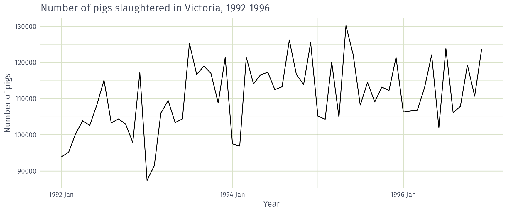
How would you forecast these series?
Some simple forecasting methods
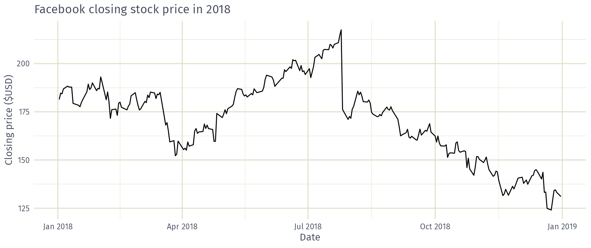
How would you forecast these series?
Some simple forecasting methods
MEAN(y): Average method
- Forecast of all future values is equal to mean of historical data \(\{y_1,\dots,y_T\}\).
- Forecasts: \(\hat{y}_{T+h|T} = \bar{y} = (y_1+\dots+y_T)/T\)
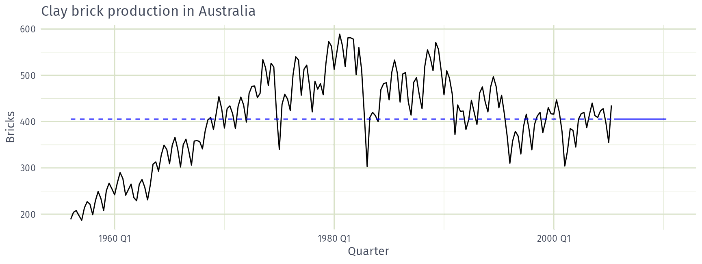
Some simple forecasting methods
NAIVE(y): Naïve method
- Forecasts equal to last observed value.
- Forecasts: \(\hat{y}_{T+h|T} =y_T\).
- Optimal when the series is a random walk (e.g. stock prices).
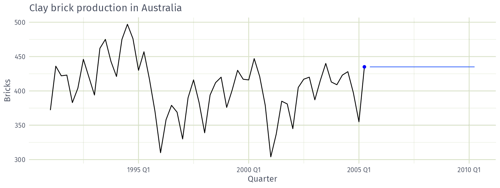
Some simple forecasting methods
SNAIVE(y ~ lag(m)): Seasonal naïve method
- Forecasts equal to last value from same season.
- Forecasts: \(\hat{y}_{T+h|T} =y_{T+h-m(k+1)}\), where \(m=\) seasonal period and \(k\) is the integer part of \((h-1)/m\).
lag()defaults to the seasonal period, soSNAIVE(y)is enough.
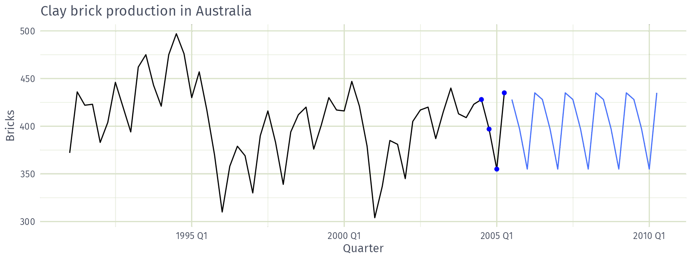
Some simple forecasting methods
RW(y ~ drift()): Drift method
- Forecasts equal to last value plus average change.
- Forecasts:
\[\begin{aligned} \hat{y}_{T+h|T} & = y_{T} + \frac{h}{T-1}\sum_{t=2}^T (y_t-y_{t-1})\\ & = y_T + \frac{h}{T-1}(y_T -y_1). \end{aligned}\]
- Equivalent to extrapolating a line drawn between first and last observations.
Some simple forecasting methods
Drift method
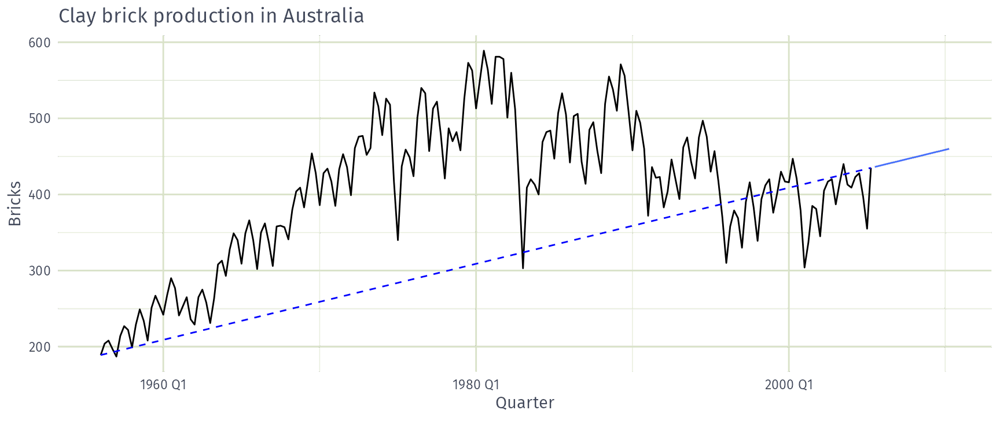
Which benchmark suits the pigs series?
Which benchmark method is best for the number of pigs slaughtered in Victoria?
MEAN()NAIVE()SNAIVE()RW(~ drift())
Specify and estimate
Model specification
- Model specification in fable supports a formula-based interface.
- A model formula in R is expressed using
response ~ terms:- the left side describes the response;
- the right side describes the terms used to model the response.
- Model names are in capitals, e.g.
SNAIVE(Beer ~ lag("year"))orRW(Beer ~ drift()).
Model fitting: example
The model() function trains models on data.
# A mable: 1 x 4
Seasonal_naive Naive Drift Mean
<model> <model> <model> <model>
1 <SNAIVE> <NAIVE> <RW w/ drift> <MEAN>A mable is a model table, each cell corresponds to a fitted model.
Extract information from mable
report()gives a formatted model-specific display.tidy()extracts the estimated parameters (if any) of each model.glance()gives one row of summary statistics per model, such assigma2.select()andfilter()pick out specific models.
Produce forecasts
Producing forecasts
- The
forecast()function is used to produce forecasts from estimated models. - The forecast horizon can be specified with:
has a number (the number of future observations);has natural language (the length of time to predict, e.g."5 years");new_data, a dataset of future time periods.
Producing forecasts
# A fable: 80 x 4 [1Q]
# Key: .model [4]
.model Quarter Beer .mean
<chr> <qtr> <dist> <dbl>
1 Seasonal_naive 2010 Q3 N(419, 373) 419
2 Seasonal_naive 2010 Q4 N(488, 373) 488
3 Seasonal_naive 2011 Q1 N(414, 373) 414
4 Seasonal_naive 2011 Q2 N(374, 373) 374
# ℹ 76 more rowsA fable is a forecast table with point forecasts and distributions.
Visualising forecasts
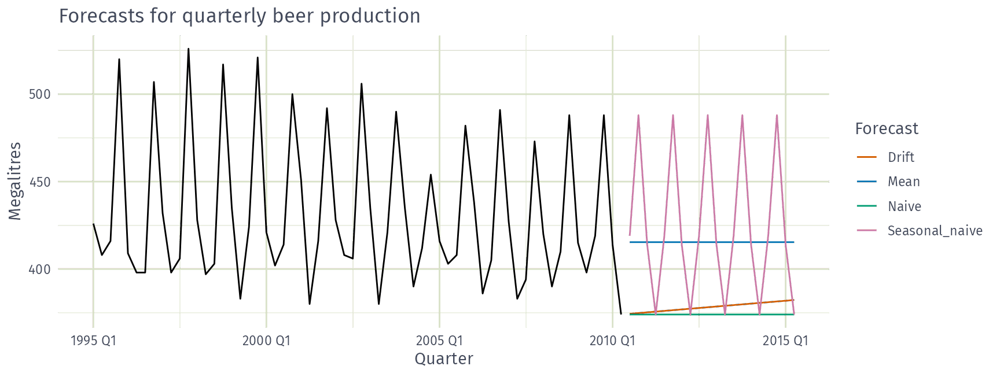
Forecast distributions
- A forecast \(\hat{y}_{T+h|T}\) is (usually) the mean of the conditional distribution \(y_{T+h} \mid y_1, \dots, y_{T}\).
- Many time series models produce normally distributed forecasts.
- The forecast distribution describes the probability of observing any future value.
Forecast distributions - normal distribution
Assuming residuals are normal and uncorrelated, with variance \(\hat\sigma^2\):
| Mean: | \(y_{T+h|T} \sim N(\bar{y}, (1 + 1/T)\hat{\sigma}^2)\) |
| Naïve: | \(y_{T+h|T} \sim N(y_T, h\hat{\sigma}^2)\) |
| Seasonal naïve: | \(y_{T+h|T} \sim N(y_{T+h-m(k+1)}, (k+1)\hat{\sigma}^2)\) |
| Drift: | \(y_{T+h|T} \sim N(y_T + \frac{h}{T-1}(y_T - y_1),h\frac{T+h}{T}\hat{\sigma}^2)\) |
where \(k\) is the integer part of \((h-1)/m\).
Note that when \(h=1\) and \(T\) is large, these all give the same approximate forecast variance: \(\hat{\sigma}^2\).
Forecast distributions from bootstrapping
When a normal distribution for the residuals is an unreasonable assumption, one alternative is to use bootstrapping, which only assumes that the residuals are uncorrelated with constant variance.
A residual (one-step forecast error) is \(e_t = y_t - \hat{y}_{t|t-1}\), so \(y_t = \hat{y}_{t|t-1} + e_t\).
So we can simulate the next observation of a time series using \(y_{T+1} = \hat{y}_{T+1|T} + e_{T+1}\), where \(e_{T+1}\) is sampled (with replacement) from the past residuals.
Adding the new simulated observation to our data set, we can repeat the process to obtain \(y_{T+2} = \hat{y}_{T+2|T+1} + e_{T+2}\)
Generate many possible futures using generate()
# A tsibble: 60 x 4 [1Q]
# Key: .model, .rep [5]
.model Quarter .rep .sim
<chr> <qtr> <chr> <dbl>
1 NAIVE(Beer) 2010 Q3 1 387.
2 NAIVE(Beer) 2010 Q4 1 371.
3 NAIVE(Beer) 2011 Q1 1 327.
4 NAIVE(Beer) 2011 Q2 1 276.
5 NAIVE(Beer) 2011 Q3 1 237.
# ℹ 55 more rowsGenerate 5 different futures
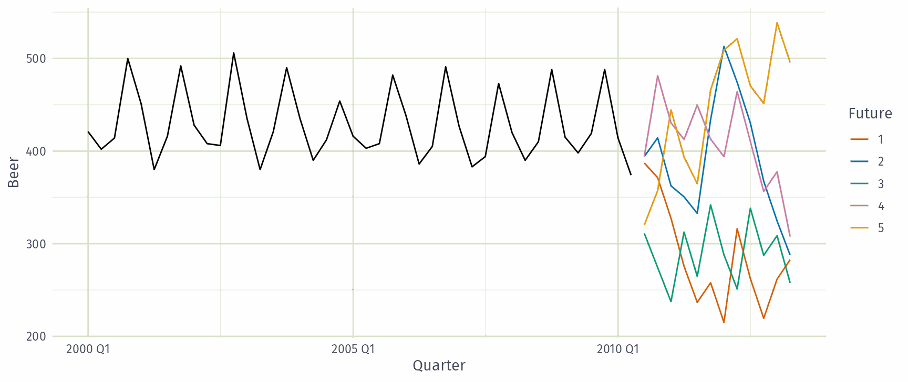
Use forecast() to produce probabilistic forecasts
# A fable: 12 x 4 [1Q]
# Key: .model [1]
.model Quarter Beer .mean
<chr> <qtr> <dist> <dbl>
1 NAIVE(Beer) 2010 Q3 sample[5000] 374.
2 NAIVE(Beer) 2010 Q4 sample[5000] 375.
3 NAIVE(Beer) 2011 Q1 sample[5000] 375.
4 NAIVE(Beer) 2011 Q2 sample[5000] 374.
5 NAIVE(Beer) 2011 Q3 sample[5000] 374.
6 NAIVE(Beer) 2011 Q4 sample[5000] 374.
7 NAIVE(Beer) 2012 Q1 sample[5000] 375.
8 NAIVE(Beer) 2012 Q2 sample[5000] 374.
9 NAIVE(Beer) 2012 Q3 sample[5000] 376.
10 NAIVE(Beer) 2012 Q4 sample[5000] 376.
11 NAIVE(Beer) 2013 Q1 sample[5000] 375.
12 NAIVE(Beer) 2013 Q2 sample[5000] 375.Prediction intervals
- Forecast intervals can be extracted using the
hilo()function.
# A tsibble: 8 x 3 [1Q]
Quarter .mean `95%`
<qtr> <dbl> <hilo>
1 2010 Q3 374 [241.36, 507]95
2 2010 Q4 374 [186.42, 562]95
3 2011 Q1 374 [144.27, 604]95
4 2011 Q2 374 [108.73, 639]95
5 2011 Q3 374 [ 77.42, 671]95
6 2011 Q4 374 [ 49.11, 699]95
7 2012 Q1 374 [ 23.08, 725]95
8 2012 Q2 374 [ -1.15, 749]95Prediction intervals
# A tsibble: 20 x 4 [1Q]
Quarter .mean `50%` `75%`
<qtr> <dbl> <hilo> <hilo>
1 2010 Q3 419 [406, 432]50 [397, 441]75
2 2010 Q4 488 [475, 501]50 [466, 510]75
3 2011 Q1 414 [401, 427]50 [392, 436]75
4 2011 Q2 374 [361, 387]50 [352, 396]75
5 2011 Q3 419 [401, 437]50 [388, 450]75
6 2011 Q4 488 [470, 506]50 [457, 519]75
7 2012 Q1 414 [396, 432]50 [383, 445]75
8 2012 Q2 374 [356, 392]50 [343, 405]75
9 2012 Q3 419 [396, 442]50 [380, 458]75
10 2012 Q4 488 [465, 511]50 [449, 527]75
11 2013 Q1 414 [391, 437]50 [375, 453]75
12 2013 Q2 374 [351, 397]50 [335, 413]75
13 2013 Q3 419 [393, 445]50 [375, 463]75
14 2013 Q4 488 [462, 514]50 [444, 532]75
15 2014 Q1 414 [388, 440]50 [370, 458]75
16 2014 Q2 374 [348, 400]50 [330, 418]75
17 2014 Q3 419 [390, 448]50 [369, 469]75
18 2014 Q4 488 [459, 517]50 [438, 538]75
19 2015 Q1 414 [385, 443]50 [364, 464]75
20 2015 Q2 374 [345, 403]50 [324, 424]75Prediction intervals
# A tsibble: 20 x 3 [1Q]
Quarter `50%_lower` `50%_upper`
<qtr> <dbl> <dbl>
1 2010 Q3 406. 432.
2 2010 Q4 475. 501.
3 2011 Q1 401. 427.
4 2011 Q2 361. 387.
5 2011 Q3 401. 437.
6 2011 Q4 470. 506.
7 2012 Q1 396. 432.
8 2012 Q2 356. 392.
9 2012 Q3 396. 442.
10 2012 Q4 465. 511.
11 2013 Q1 391. 437.
12 2013 Q2 351. 397.
13 2013 Q3 393. 445.
14 2013 Q4 462. 514.
15 2014 Q1 388. 440.
16 2014 Q2 348. 400.
17 2014 Q3 390. 448.
18 2014 Q4 459. 517.
19 2015 Q1 385. 443.
20 2015 Q2 345. 403.Fitted values and residuals
Fitted values
- \(\hat{y}_{t|t-1}\) is the forecast of \(y_t\) based on observations \(y_1,\dots,y_{t-1}\).
- We call these “fitted values”.
- Sometimes drop the subscript: \(\hat{y}_t \equiv \hat{y}_{t|t-1}\).
- Often not true forecasts since parameters are estimated on all data.
For example:
- \(\hat{y}_{t} = \bar{y}\) for average method.
- \(\hat{y}_{t} = y_{t-1}\) for naïve method.
- \(\hat{y}_{t} = y_{t-m}\) for seasonal naïve method.
- \(\hat{y}_{t} = y_{t-1} + (y_{T}-y_1)/(T-1)\) for drift method.
Forecasting residuals
Residuals in forecasting: difference between observed value and its fitted value: \(e_t = y_t-\hat{y}_{t|t-1}\).
- Residuals are one-step errors on the training data; forecast errors are on unseen test data.
augment()gives both.residand.innov(innovation residuals); they are equal unless the response is transformed.
Beer production - augment
# A tsibble: 218 x 6 [1Q]
# Key: .model [1]
.model Quarter Beer .fitted .resid .innov
<chr> <qtr> <dbl> <dbl> <dbl> <dbl>
1 SNAIVE(Beer) 1956 Q1 284 NA NA NA
2 SNAIVE(Beer) 1956 Q2 213 NA NA NA
3 SNAIVE(Beer) 1956 Q3 227 NA NA NA
4 SNAIVE(Beer) 1956 Q4 308 NA NA NA
5 SNAIVE(Beer) 1957 Q1 262 284 -22 -22
6 SNAIVE(Beer) 1957 Q2 228 213 15 15
7 SNAIVE(Beer) 1957 Q3 236 227 9 9
8 SNAIVE(Beer) 1957 Q4 320 308 12 12
9 SNAIVE(Beer) 1958 Q1 272 262 10 10
10 SNAIVE(Beer) 1958 Q2 233 228 5 5
# ℹ 208 more rowsBeer production - fitted values
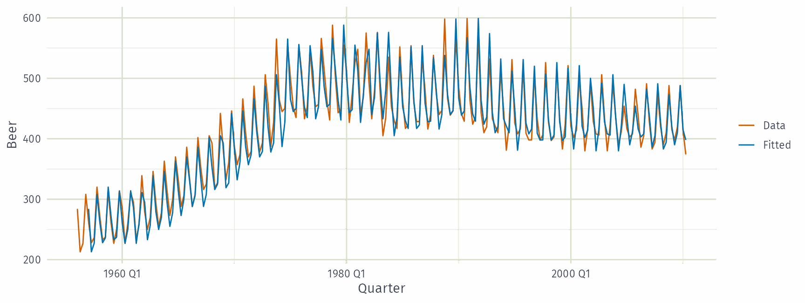
Beer production - residuals
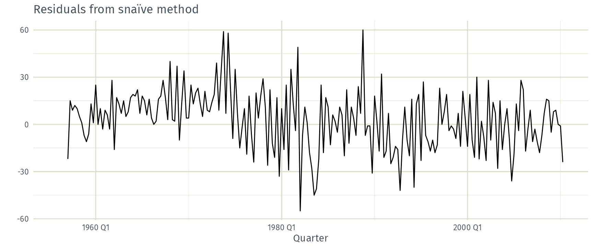
Beer production - residual ACF
These residuals look like random noise
Scale: Strongly disagree · Disagree · Neutral · Agree · Strongly agree